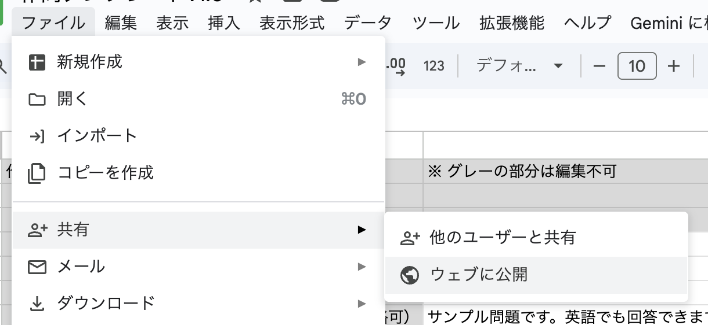
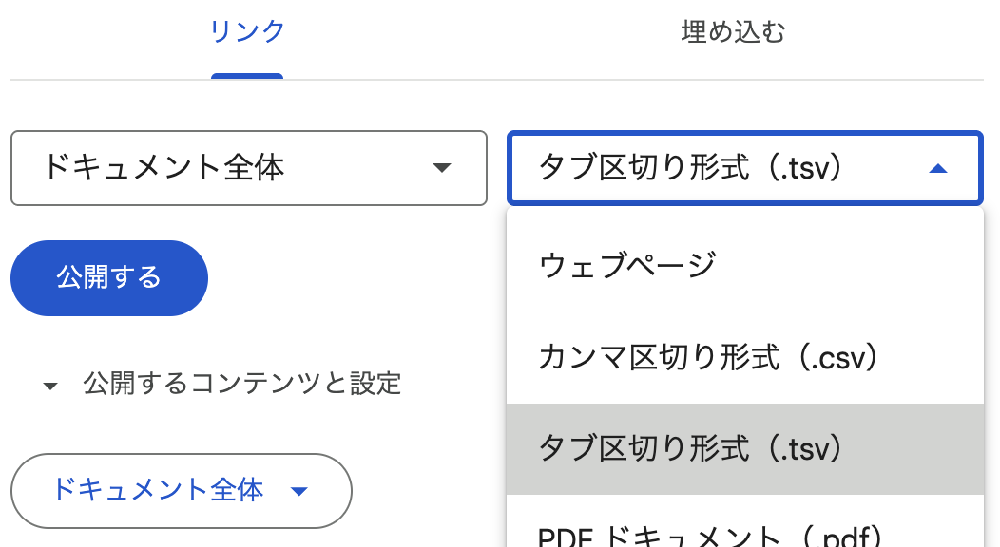
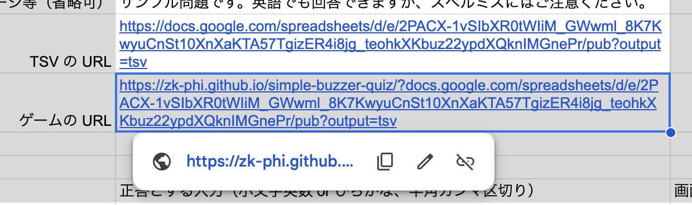

早押し検定 〜 問題データの作り方
Google Spreadsheet を使った作り方（初心者向け）
一度設定してしまえばスプレッドシートで問題を管理できて便利ですが、問題のロードはやや重くなります。
1. シートのコピー

このシート を開いて、「ファイル」メニューからコピーを作成してください。
2. シートをウェブに公開
「ファイル」メニューから「共有＞ウェブに公開」を選択します。
「タブ区切り形式（.tsv）」のリンクを作成します。

成功すると URL が発行されます。これを忘れずにコピーしておいてください。
3. ゲームの URL を作成
コピーした URL を、シートの「TSV の URL」欄に貼り付けてください。「ゲームの URL」が自動的に作成されます。
この URL が、あなたのオリジナル問題で遊ぶための URL になります。ためしにアクセスしてみて、サンプル問題が読み込まれることを確認してください。
4. 問題の編集
あとはあなたの問題をスプレッドシートに記入するだけです！スプレッドシートを保存すれば、まもなくゲームに反映されます。
JSON データを自分で作成する（上級者向け）
プログラマーさんなど、自力でなんとかできる方はこちらがおすすめです。
データの形式
このアプリでは、以下の形式の JSON ファイルを開くことができます。サンプル
- title: 問題セットのタイトル（文字列）
-
author: 問題の作者情報
- text: 作者の名前（文字列）
- url: ホームページなどの URL（文字列）
- description: プレイヤーへのメッセージ（文字列・省略可）
- shuffle: 出題順をシャッフルする場合は true（省略可）
-
problems: 問題オブジェクトの配列
- body: 問題の本文（文字列）
- answers: 正解とする入力の一覧（文字列の配列）
- displayAnswer: 画面に表示する正答（文字列）
- explanation: 補足解説（文字列・省略可）
answers に指定できるのは「小文字英数字」または「ひらがな」のどちらかになります。
かなとアルファベットが混在するような解答は、現時点では設定できません🙇
データの読み込みかた
JSON ファイルを適当な場所にアップロードして、「https://zk-phi.github.io/simple-buzzer-quiz/?」の後ろに続けて、URL を書いて下さい（「https://」 は不要）。GitHub Gist あたりが便利だと思います。